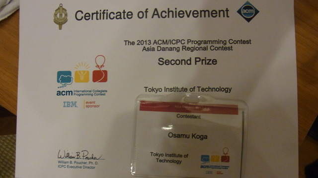
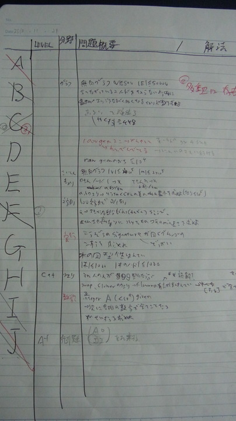

ICPC2013 ダナン大会参加記
ICPC2013 ダナン大会（ベトナム）にbinding.pryとして参加した。

チームメンバー、戦略等は会津のときと同じ。
解いた時間はちゃんと覚えてないので、問題別に反省を書く。
全体
練習セッションで、Runtime ErrorもTLEとして返ってくることが判明する。 ちょっと嫌な感じがするものの、REとTLEはコードから明らかに区別できるだろうということで、あまり問題視はしないことにする。
本番開始前には、コンテスト開始に先んじてPC^2へのログインが許されていて、問題名が全部見える状態になっていた。 せっかくなので問題名から中身の予測をして、各自得意そうなところから読むという分担をした（ベトナム大会は問題文が簡単なので、あまり意味はなかった気がする）。
ベトナム大会の特徴は
- 実行時間、メモリ使用量ともに制限が明記されていない。聞いても教えてくれない。
- サンプルが弱い。よっぽどのことがない限り、自分でコーナーケースを複数考えておく必要がある。
- ほとんどの問題文はサンプル含めてA4の1ページ＋αに収まっており、シンプルで読みやすい。
- 制約が曖昧な場合がある。分からなければClarを投げるべき。
といったあたり。
A
得点のリストが与えられるので、同着の一番多い順位を出力する問題。複数ある場合は一番上位を出力する。
読んだ瞬間にやるだけと言って書き始める。
サンプルが通って投げた後で、順位を付けるときに全体をreverseし忘れていたことに気づく。これはひどい……。 直してAC。
J
グラフ上で点Aから点Bまで、K手以内で行く場合の数を求める問題。MOD Mで計算した結果を出力する。 とこはるさんが読んで、行列の累乗和を求めるだけと言ったので書く。
WA。よく見ると、1箇所long longと間違えてintを使い、オーバーフローしていそうなところがあった。
直してもWA。よくわからないので印刷して放置する。
Iを書いている間にとこはるさんがコードと問題をチェックし、Mの上限が10^12のため掛け算をするとlong longでもオーバーフローすることに気づく。 桁ごとにMODを取りつつ掛け算する方式に修正して投げる。AC。
MODを取っているからと言って、オーバーフローを考えなくても良いということにはならない。
I
問題文が長いが、本質的には最後の2行だけだとmikecatさんが主張していて、実際その通りっぽいので書く。 どの桁の数字も異なるような数がひとつ与えられるので、その数より大きく、同様の性質を満たす最小の数を求める問題。
ナイーブな枝刈り探索を書いてAC。
C
L, R ≦ 10^7 が与えられるので、この範囲の整数で、約数の個数がK-maximumなもののうち、最小のものを求める問題。
問題文でK-maximumの定義が書いてあるのだが、この条件が
- there are K numbers not greater than X
- there are M-K numbers not smaller than X
とX自身を二重カウントするような定義になっていて明らかにおかしい。 Clarを投げるも、問題文をよく読めという答えしか返ってこない。
約数カウント自体はO(N log N)くらいでできるので、[L,R]のすべての数に対して約数の個数を数えるナイーブな実装をする。 K-maximumに関しては仕方ないので、普通にソートしてK番目の要素を採用するようにする。
投げたらTLE。 実際、手元で最大ケースを複数回書くと遅くなっていた。 対応表をmapで持っているのが良くない気がしたので、vectorを使うようにした。 また、約数カウントの結果をキャッシュしておくようにした。
今度はWA。 コードが間違っている気はしないので、K-maximumの定義がおかしいのではないかと考える。 条件がそもそも成立しえないものを書いていて意味不明なのだが、恣意的に解釈すれば、条件のような分割が存在するものをK-maximumとするようにも読めて、この解釈だとK-maximumが2つ存在する可能性がある。
たとえば数列が1 2 2 3のとき、(1 2 2) (3) という分割は、2と3の両方に対して上記の条件を満たす。
まさかとは思いつつ、他に問題が思いつかないので修正して投げる。WA。
K-maximumの定義が怪しい上、ジャッジがあまり問題視してなさそうなため危険な雰囲気があるので、ひとまず諦めて印刷し、暇になったらデバッグすることに決めてFを解く。
Fを解いてからぱっと解ける問題がなさそうだったので、Cに戻ってくる。 mikecatさんがコードを読みながら、素因数分解のコードが間違っていそうと指摘する。 以前に書いた、素因数テーブルを使って素因数分解する方法を使ったのだが、ここで最小の素因数が常にテーブルに入るものと勘違いして、これを利用した高速化を約数の個数カウントに適用していたのが原因だった。
最小の素因数がストックされるように修正して投げる。WA。
K-maximumの定義を最初のものに戻して投げてみる。やっとAC。
この問題は今回最大の失点だった。 素因数分解のコードをバグらせていなければ初回のTLEだけで済んだところを、問題文が悪かったとは言え、無駄にWAを増やしてしまったのは間違いない。 また、約数カウントを篩で求めるという方針はとこはるさんと合意していたものの、アルゴリズムの詳細について認識が食い違っていた。 とこはるさんの考えでは、素因数分解を経由せず、直接的に以下のようなコードで求められるとのこと。
for(i = 1; i <= N; i++) {
for(j = i; j <= N; j +=i) {
cnt[j]++;
}
}
これは実際O(N log N)で動くのだが、この形はO(N^2)かかると勘違いしていた。
また、自分が書き始めるよりも前にmikecatさんには問題と方針を説明していたらしいので、普通にmikecatさんとコーディングを交代するべきだったのかもしれない （ただし、会場がとても狭くて動きにくいため、コーダーが交代しづらいという要因もあった）。
F
0と1のみで構成された文字列上に区間を取り、このsubstringを反転したものを区間の末尾に挿入するという操作を繰り返し、文字列sを得る。 このとき、最初の文字列として考えられるものの最短長を求めるという問題。
同じ文字が2個以上連続しているところが任意の個数に縮められることは、容易にわかる。 問題は1個だけしか連続していない箇所をどう処理するかだが、これは左側を見て、2個以上連続している塊であれば、そこを折り返し点として文字列を縮めることができる。 この操作は順番によらず同じ結果になりそうなので、Greedyにこの操作を繰り返していけばよいのではないか？という方針をとこはるさんが考える。 Typical DPのイウィのGreedy解法っぽい。
とりあえず実装してみるとうまく動くので投げる。AC。
B
グラフが与えられて、ここから辺を可能な限り取り除く。 このとき、最初のグラフで連結なものは、操作後も連結なままにしたい。 このような辺の取り除き方の個数を求める問題。
とこはるさんが、これは有名な定理があると言って、謎の立式を始める。 それぞれの連結成分ごとに接続行列を作り、対角成分には頂点の次数×-1を置いた上で行列式を求めるらしい。
よくわからないけどその通りに書く。 なぜか全部0になる。
行列式を求める過程をトレースしてみると、最後の行が全部0になっているっぽい。 最後の行を無視すればよかった気がする、ととこはるさんが言ったのでそうしてみる。 サンプルを食わせると、うまく動いていそうなものと変な値が出ているものがあって、どうも行列式が負数になっているっぽい。
いくつか実験してみると、行列の次数が偶数のときだけ結果が負になっているように見える。 そこだけ修正したらサンプルが合ったので投げてみる。
……と思ったら、何故かPC^2が応答しない。 スタッフを呼んで直してもらう。
気を取り直して再度Submit。無事ACされた。 あとで調べたところ、とこはるさんが最初の行列を正負逆に覚えていたせいで行列式がおかしくなっていたらしい。 結果的には、行列の次数で場合分けするのは妥当な操作だった。
D
Bを通した時点で残り20分。 問題はちゃんと理解していなかったのだが、二部グラフの最小費用マッチングになるというところまで立式されていたので、とこはるさんとmikecatさんが方針を詰めている間に最小費用流ライブラリを写す。 写し終えたところで、とこはるさんとmikecatさんの指示で解答コードを書いていく。
最後まで書いてからコンパイルエラーを修正する。 コンパイルが通ったところで残り10秒くらいだったので急いで提出。
……が、出した瞬間に終了して、ジャッジからはTLEが返ってきた。 たぶんコンテスト終了の意味だと思う （あとでサンプルを食わせてみたら変な答えが出たので、どっちにしろ通りはしなかった）。
結果
最終結果がまだ公式に出ていないが、終了後のレセプションでは総合5位あたりにいる感じで、Second Prizeをもらった。 総合4位とはペナルティの差だけで、ひとつ上ならFirst Prizeでトロフィーまでもらえたらしく、ちょっと悔しい。

反省
結局コーディングは自分ひとりで担当することになってしまった。 今回解いた問題はどれもあまり実装は重くなく、疲労はそんなになかったものの、CやIはmikecatさんが先に読んで問題文まで理解していたはずなので、スイッチしてコーダーを交代するのが普通だと思う （先述したように、動ける領域が狭くてコーダー交代がすごく面倒だったという背景もあるにはあるが）。
また、全体的にWAを出しすぎである。 特にlong longとintを間違えるなどのミスはもったいない。 会津大会では保守的に全部long longで書いていた記憶があるが、今回は徹底できていなかった。
Cがなかなか通らなかったのと、Bが残り時間が少ない中、完全にとこはるさん頼みで焦ってしまったのとで、ペースが崩れてしまった印象がある。
本番で書いた問題メモ。
